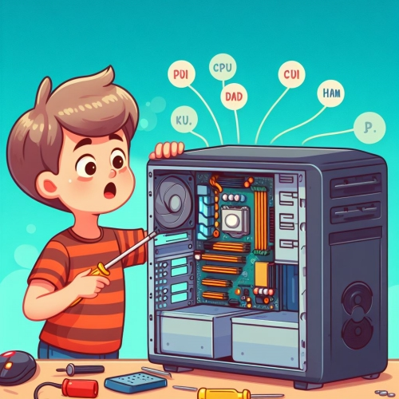

Olá! Recentemente, concluí minha graduação em Tecnologia em Redes de Computadores na UNOPAR e adquiri conhecimentos em administração de redes, segurança de aplicações e suporte técnico. Também obtive certificados profissionais, incluindo o Certificado Profissional de Suporte em TI do Google e Formação em Excel VBA.
Nos últimos anos, trabalhei como frentista na MobiPE Recife, onde desenvolvi habilidades em controle de abastecimento e gestão de informações de combustível na frota de veículos. Usei o sistema GTFrota para manter registros precisos e melhorei a eficiência operacional, incluindo a redução de custos e desperdícios.
Quem sabe na sua empresa?
Estou disponível para bater um papo, você pode entrar em contato via e-mail leojovem15@hotmail.com ✨
Mobi Brasil
-Responsável pelo controle eficiente e preciso do abastecimento da frota de veículos da empresa durante o horário noturno, incluindo finais de semana. -Utilização do sistema GTFrota para gerenciar todas as informações relacionadas ao combustível, garantindo registros precisos e atualizados para a equipe de gestão. -Manter o mapa de abastecimento atualizado pelo excel com o numero de ordem de veiculo para o controle de abastecimento. -Realização da análise e monitoramento regular dos níveis de combustível nos veículos, garantindo o abastecimento adequado para as atividades diárias. -Desenvolvimento e implementação de procedimentos eficientes para minimizar desperdícios e reduzir custos, resultando em economias significativas para a empresa ao longo do tempo. -Colaboração com equipes não técnicas, comunicando informações técnicas de maneira clara e eficaz, facilitando o entendimento mútuo e a colaboração. -Manutenção de registros detalhados e precisos dos abastecimentos realizados, relatórios de consumo, quilometragem percorrida e outras informações relevantes. -Fornecimento de dados essenciais para relatórios gerenciais e tomadas de decisão estratégica. -Habilidade em comunicar informações técnicas de maneira clara e compreensível para pessoas sem experiência técnica. -Organização excepcional trabalho em equipe e habilidade para gerir grandes volumes de informações com precisão e detalhamento.
Mobi Brasil
-Execução de limpeza e higienização dos ônibus, garantindo que os veículos estejam limpos e em condições adequadas para os passageiros. -Realização da limpeza interna dos ônibus, incluindo assentos, pisos, janelas, corredores e outras áreas comuns. -Manutenção da limpeza externa dos ônibus, removendo sujeira, poeira e outros resíduos das carrocerias e janelas. -Abastecimento de materiais de limpeza e solicitação de reposição de produtos quando necessário, assegurando o suprimento contínuo para a realização das tarefas. -Descarte correto de resíduos e lixo gerados durante as atividades de limpeza, seguindo os procedimentos estabelecidos pela empresa. -Colaboração com a equipe de manutenção para identificar e relatar possíveis problemas nos ônibus que necessitem de reparos. -Cumprimento rigoroso dos horários estabelecidos para a limpeza dos ônibus, assegurando a disponibilidade dos veículos nos horários de partida. -Comunicação eficiente com os supervisores e demais colegas de trabalho, mantendo um ambiente de trabalho colaborativo.
Nesse período, de 2010 a 2019, tive o prazer de lançar meu primeiro projeto online para o mundo todo. Movido pela minha curiosidade, coloquei em prática o que sabia de HTML e CSS e, assim, surgiu a ideia de criar um site para compartilhar links de vídeos online.
Tecnologias utilizadas: HTML, CSS, JavaScrip.
Desde 2019, dei um tempo no mundo do desenvolvimento web. Depois de concluir minha jornada de nove anos em meu primeiro emprego, que estava bem longe do campo de TI que sempre sonhei, tomei a decisão de voltar ao jogo. Resolvi sacudir a poeira e colocar em prática novamente o que sabia de HTML, CSS e JavaScript. Meu conhecimento ainda está no nível básico, mas fiz questão de garantir que o meu trabalho funcione bem em dispositivos móveis. Estou torcendo para que os recrutadores reconheçam o meu esforço.
Tecnologias utilizadas: HTML, CSS, JavaScrip..
Sinta-se à vontade para me enviar uma mensagem em [leojovem15@hotmail.com] e vamos iniciar uma conversa incrível!
 LinkedIn
LinkedIn  GitHub
GitHub